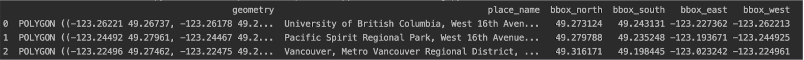
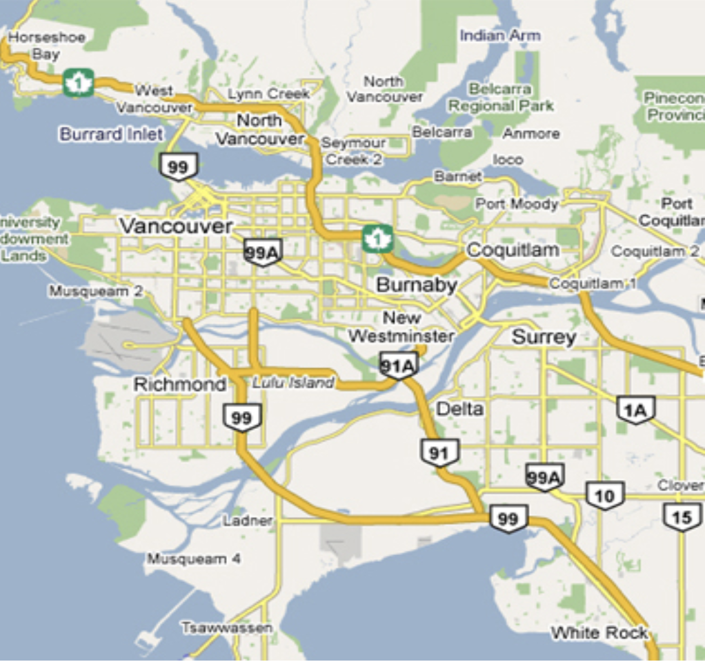
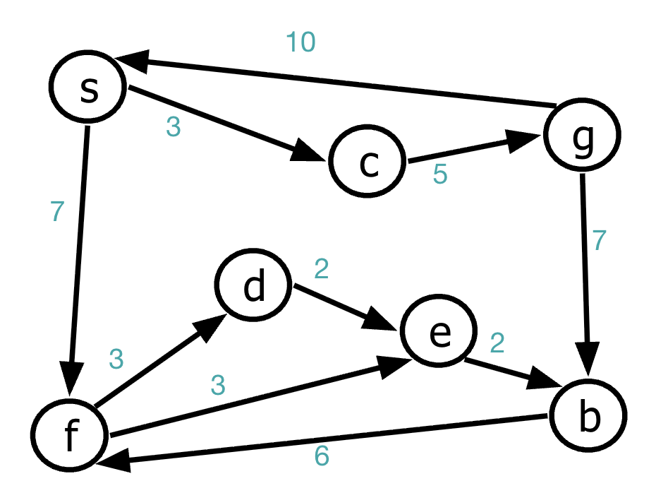
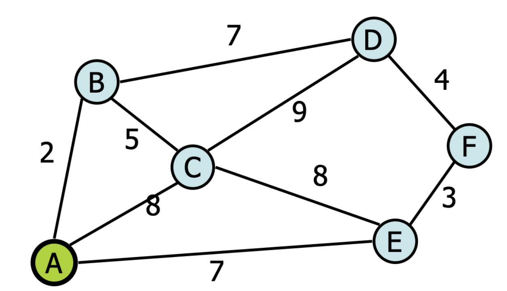

CPSC 203, 2025 W1
November 18, 2025
The data we use for computation is separate from the visualization.
An open-source alternative to Google Maps’ data.
https://www.openstreetmap.org/
OSM provides an Application Programmer’s Interface (API) that allows our program to request data, which is returned in a reasonable format.
OpenStreetMap gives us raw geographic data (intersections, roads, tags)
osmnx converts this into a graph:
nodes = intersections (lat/long)
edges = roads with attributes (length, max speed, etc.)
We apply graph algorithms to find routes, or substructures.
Finally: visualize results using Matplotlib or Folium
Three Parts
Assembling the data - OSM, local data stores, statsCan, etc. This is mostly the art of assembling geodataframes.
Computing on the data - library osmnx simplifies graph algorithms and computation, but also supports other spatial computation.
Visualizing the data - matplotlib for static maps, folium for interactive maps. Other alternatives available.
What We’ll See in the Demos
Convert map data to graph
Identify amenities (Starbucks)
Compute shortest route between two landmarks
Visualize everything interactively

Given a start vertex (source) \(s\), find the path of least total cost from \(s\) to every vertex in the graph.

Dijkstra’s Algorithm (1959)
Given a source vertex \(s\), we wish to find the shortest path from \(s\) to every other vertex in the graph.
Initialize structure:
d:p:Repeat these steps:
Initialize structure:
v,
d[v] = INF,p[v] = nullInitialize source: d[s] = 0
Repeat these steps n times:
d[] unlabelled vertex: vvw of v,
d[w])
d[w] = ______________p[w] = vWhen a node becomes labeled, its shortest distance is final. It will never improve again.
d[] values only decrease, never increase.
The predecessors p[] form a shortest-path tree.
Execute Dijkstra’s algorithm on this graph:
Initialize structure:
v,
d[v] = INF,p[v] = nullInitialize source: d[s] = 0
Repeat these steps n times:
d[] unlabelled vertex: vvw of v,
d[w])
d[w] = ______________p[w] = v____________________________________ ____________________________________ ____________________________________
____________________________________ ____________________________________ ____________________________________
What We’ll See in the Demos
Convert map data to graph
Identify amenities (Starbucks)
Compute shortest route between two landmarks
Visualize everything interactively
| Algorithm | Data Structure | Costs? | Shortest? | Frontier |
|---|---|---|---|---|
| DFS | Stack | ignored | no | dive deep |
| BFS | Queue | all equal | yes | explore in layers |
| Dijkstra | Priority Queue | any non-neg | yes | explore by shortest known distance |
REALLY great example: https://www.youtube.com/watch?v=wsSEKm-rU6U
OSMNX reference: https://github.com/gboeing/osmnx-examples
Tutorial: https://gist.github.com/psychemedia/b49c49da365666ba9199d2e27d002d07